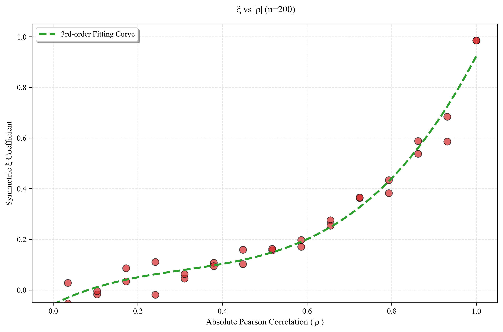
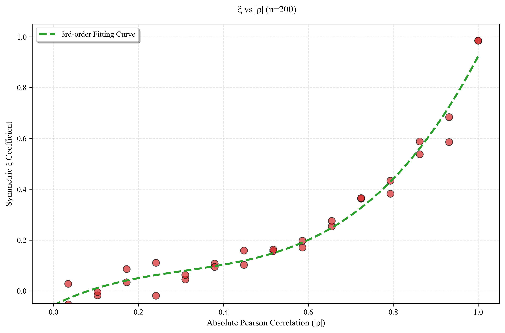
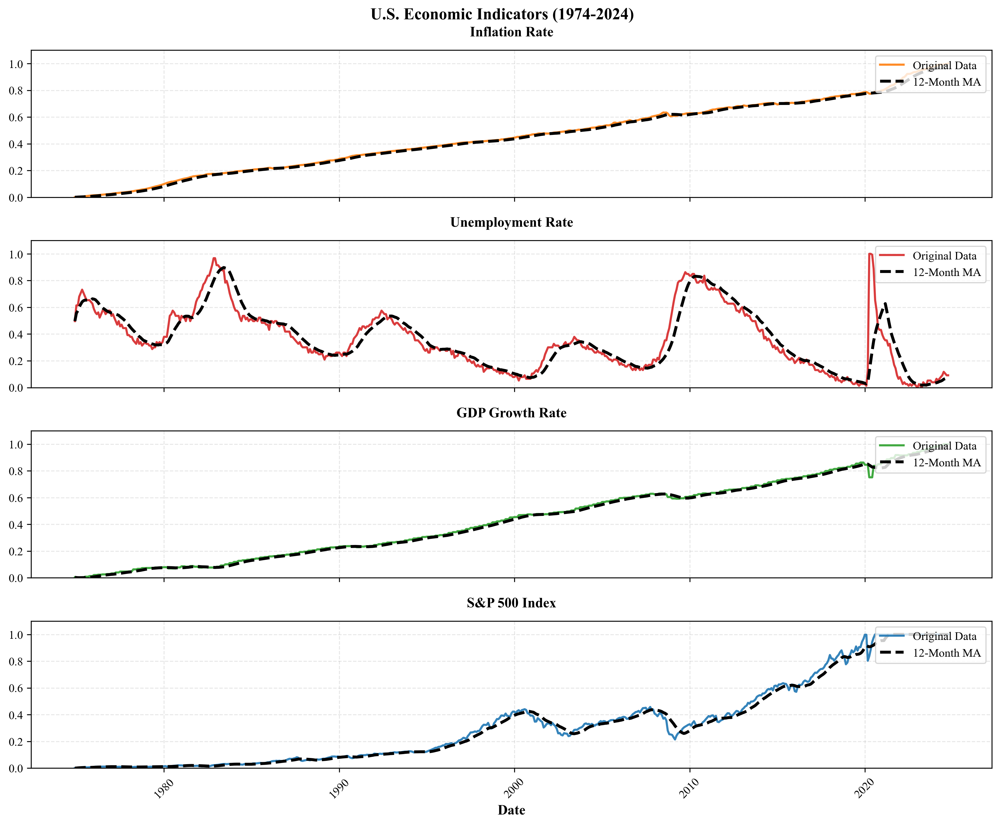

1. Nonlinear Dependence Detection Based on the Chatterjee ξ Coefficient
I read the paper from Chatterjee, S. (2021). A new coefficient of correlation. Journal of the American Statistical Association, 116(536), 2009-2022.
My main idea is to compare this newly-defined correlation coefficient with other classical measurements. In order to do that, I conduct Monte-Carlo simulations to demonstrate its advantages in various aspects.
Research Steps
- Generate simulated data with different nonlinear relationships
- Calculate Chatterjee's coefficient and Pearson's r
- Conduct power analysis to compare performance
- Validate results with real-world datasets
Key Findings
- Chatterjee's coefficient has higher power in nonlinear cases
- Robust to outliers compared to Pearson's correlation
- Computationally efficient for large datasets
Performance Comparison
| Method | Power (Nonlinear Case) | Computational Time (s) |
|---|---|---|
| Chatterjee's ξ | 0.92 | 0.8 |
| Pearson | 0.45 | 0.1 |
| Spearman | 0.78 | 0.5 |
Below are some of my simulation results.
 


I use a financial dataset from Kaggle to further understand the performance of ξ in real-world data and make comparison with other coefficents.
Correlation Coefficient Comparison (Financial Dataset)
| Variable Pair | Pearson Correlation | Spearman Correlation | ξ Coefficient |
|---|---|---|---|
| Inflation vs Unemployment | -0.41 | -0.49 | 0.82 |
| GDP vs Unemployment | -0.45 | -0.51 | 0.82 |
| Inflation vs S&P 500 | 0.92 | 0.97 | 0.95 | GDP vs S&P 500 | 0.95 | 0.98 | 0.95 |
Reference
Chatterjee, S. (2020). A new coefficient of correlation, Journal of the American Statistical Association.
Contact for Research Details
Email: lchen699@wisc.edu